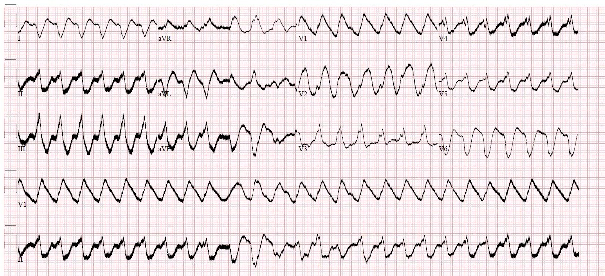
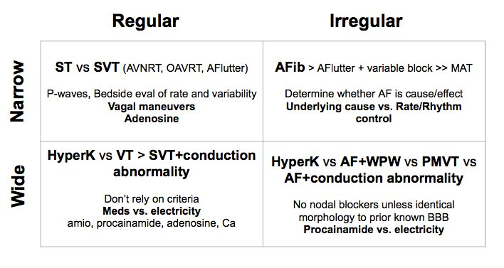
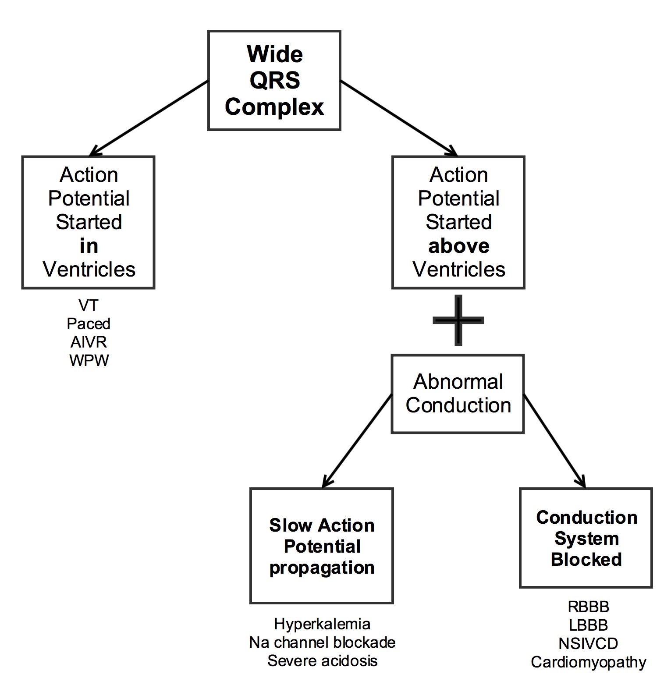
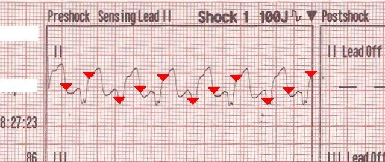
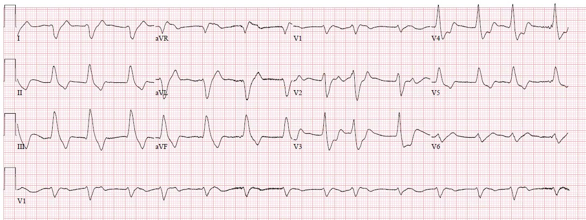
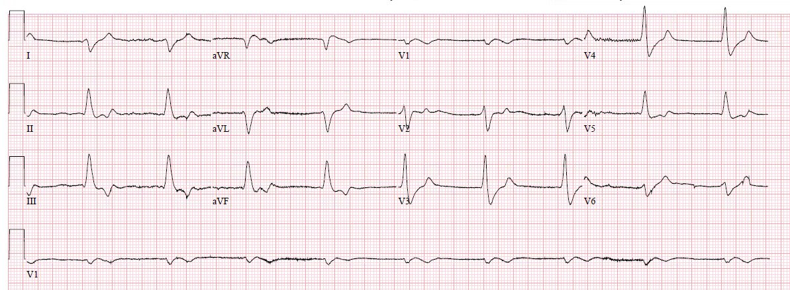
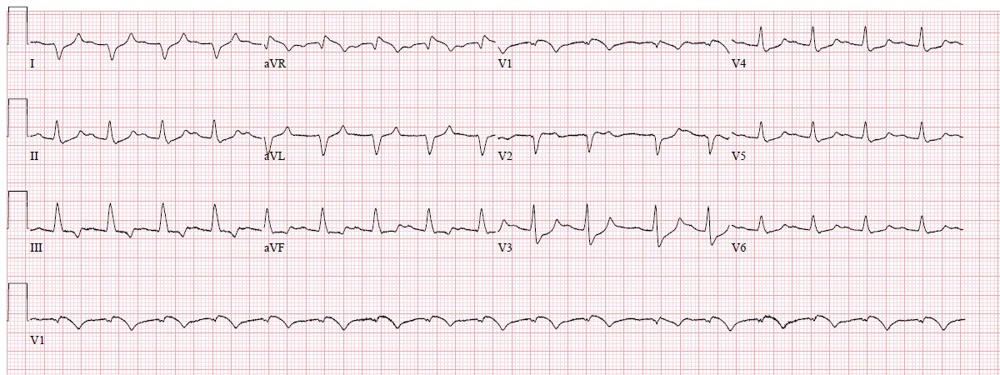

06/04/2018 — Một người đàn ông trung niên ngừng tim không có người chứng kiến
Bản dịch tiếng Việt của bài "A middle aged man with unwitnessed cardiac arrest" – Dr. Smith’s ECG Blog. Giữ nguyên toàn bộ 7 hình ảnh của bản gốc.
Bài viết của Pendell Meyers, Steve Smith biên tập
Cảm ơn bác sĩ điều trị chính của tôi, Nic Thompson, người đã chỉ huy cuộc hồi sức này một cách xuất sắc
Chúng tôi nhận được cuộc gọi báo một người đàn ông trung niên đang ngừng tim, còn 5 phút nữa sẽ đến. Ông được ước đoán khoảng 50 mấy tuổi, không rõ tiền sử bệnh. Khi đến, bệnh nhân đang được ép tim liên tục, đã đặt nội khí quản và đang được bóp bóng. Theo báo cáo của đội cấp cứu ngoài viện (EMS), bệnh nhân ngừng tim không có người chứng kiến, không rõ thời gian ngừng tuần hoàn (down time), ban đầu được phát hiện ngừng tim do rung thất (VFib), được khử rung 1 lần, sau đó ngừng tim dạng hoạt động điện vô mạch (PEA) xen kẽ với ngừng tim vô tâm thu trong lúc vận chuyển.
Bệnh nhân đến trong tình trạng ngừng tim dạng PEA, với dạng sóng tim chậm và rộng ở lần kiểm tra nhịp đầu tiên; siêu âm thấy hoạt động tim yếu ớt nhưng không bắt được mạch đùi và siêu âm động mạch đùi cũng không thấy mạch đập. Tiếp tục ép tim, và bệnh nhân được cho 1 đợt epinephrine, calci, bicarbonat, glucose.
Trong lần kiểm tra nhịp tiếp theo, chúng tôi nhận ra nhịp trên monitor có những đặc điểm gợi ý tăng kali máu nặng (rất tiếc, không có hình ảnh monitor). Sau đó chúng tôi cho thêm 2g calci clorid.
Trong vòng 1-2 phút đã tái lập tuần hoàn tự nhiên (ROSC), ngừng ép tim, bắt được mạch đùi yếu, và đường động mạch đùi đo được 80/40. Điện tâm đồ 12 chuyển đạo sau đây được ghi lại.


Có nhịp nhanh QRS rộng, đều, (phần lớn) đơn dạng. Ở một vài chuyển đạo có thể thấy hình thái QRS hơi khác nhau, nhưng nhìn chung tôi cho rằng có thể gọi đây là đơn dạng. QRS RẤT rộng ở một số chuyển đạo, và trên dải nhịp V1 có hình ảnh kỳ dị của một sóng hình sin với các cạnh sắc. Chẩn đoán phân biệt của nhịp nhanh rộng, đều, đơn dạng là: VT hoặc SVT kèm dẫn truyền lệch hướng, tất cả đều có thể kèm hoặc không kèm (+/-) tăng kali máu (xem sơ đồ bên dưới). Với hình ảnh ở V1, chẩn đoán tăng kali máu được đặt ra bất kể nhịp nền là gì. Bất cứ khi nào bạn thấy mình bối rối không biết đâu là sóng T và đâu là phức bộ QRS, nhiều khả năng bạn đang đối mặt với tăng kali máu.
Vì tăng kali máu gây tử vong hoặc qua ngừng tim do VT hay VF, hoặc qua nhịp chậm với ngừng tim dạng PEA, nên phải xem đây là VT cho đến khi chứng minh được điều ngược lại.




Chúng tôi cài máy ở chế độ sốc điện chuyển nhịp đồng bộ.
Dĩ nhiên lẽ ra tôi phải biết trước rằng mặc định nên là khử rung, chứ không phải sốc đồng bộ, bởi vì (như tôi đã viết) không thể phân biệt đâu là QRS và đâu là sóng T.
Tuy vậy chúng tôi đã kịp phát hiện ra:
Người phụ trách máy khử rung sắp sửa bấm sốc thì chúng tôi nhớ ra một điều rất quan trọng cần kiểm tra trong tình huống này. Nếu bạn chưa khắc sâu điều này vào đầu thành một phản xạ, bạn sẽ bỏ sót nó:
Monitor của máy khử rung đang đếm tần số tim gấp đôi. Cứ mỗi một chu kỳ điện trên monitor tim lại có hai dấu đánh dấu (spike) của máy. Khi xem kỹ hơn, monitor của máy khử rung đã gắn một dấu đánh dấu cho mỗi sóng T lớn cũng như cho mỗi phức bộ QRS. Do tính chất cấp cứu của những gì đang diễn ra, tôi đã quên chụp ảnh dấu hiệu hình ảnh quan trọng này, nhưng đây là một ví dụ không phải tăng kali máu:


Thay vì chấp nhận xác suất 50/50 sốc đúng vào sóng T, chúng tôi chuyển sang sốc điện không đồng bộ. Một cú sốc được thực hiện, và nhịp thay đổi như sau:


Huyết áp đo qua đường động mạch lập tức tăng từ 80/40 với dạng sóng đơn dạng bị cùn, lên 140 mấy/80 mấy với dạng sóng nảy mạnh, trông bình thường.
Trong 30 phút tiếp theo, chúng tôi nhận thấy một chu kỳ lặp đi lặp lại, mỗi lần kéo dài khoảng 15 phút, đặc trưng bởi QRS giãn rộng dần kèm tần số tim chậm dần, rồi đột ngột khởi phát VT giống hệt nhịp nhanh QRS rộng ở trên. Mỗi lần như vậy chúng tôi lại sốc điện đưa về nhịp xoang.
Trong khi đó, chúng tôi liên tục cho hết gram này đến gram khác calci clorid, đồng thời cho nhiều ống bicarbonat, nhiều đợt insulin và dextrose, và khí dung albuterol liên tục qua đường thở của máy thở. Lẽ ra chúng tôi cũng nên cho 0.25mg terbutaline tiêm bắp, nhưng chúng tôi đã không làm.
Terbutaline and Albuterol for Lowering of Plasma Postassium (Terbutaline và albuterol để hạ kali huyết tương)
Các xét nghiệm ban đầu có kết quả và xác nhận tăng kali máu nguy kịch cùng suy thận mới xuất hiện. Xét nghiệm sinh hóa tại chỗ ban đầu chỉ ghi kali lớn hơn 8. 10 phút sau, sinh hóa của phòng xét nghiệm cho thấy K = 9.7. Creatinin = 4.2, trong khi mức nền vài tuần trước là 0.8, với BUN = 109. Lactat = 11.2, troponin không phát hiện được. pH < 6.88, bicarbonat 8.
(Xin nói thêm bên lề, nếu bạn đọc nào có thể chỉ cho chúng tôi y văn mô tả chi tiết giá trị kali và troponin trong ngừng tim, lý tưởng là được phân tầng theo thời gian ngừng tuần hoàn, nhịp, nguyên nhân ngừng tim, v.v., xin vui lòng cho chúng tôi biết. Những câu hỏi này thường xuyên nảy ra khi chăm sóc bệnh nhân ngừng tim, và tôi thường tự hỏi mức tăng troponin và/hoặc kali bao nhiêu là có thể quy đơn thuần cho ngừng tim và thời gian ngừng tuần hoàn)
Sau gram calci clorid thứ 9 (cùng với các biện pháp điều trị khác ở trên), cuối cùng bệnh nhân đã thoát hẳn khỏi nhịp nhanh thất và QRS không còn giãn rộng trở lại. Đến lúc này, bác sĩ nội trú đồng nghiệp của tôi là Pete McKenna đã đặt xong một catheter lọc máu tĩnh mạch cảnh trong.


Vợ bệnh nhân đến và cung cấp một số thông tin bệnh sử rất hữu ích: Ông là nam giới 53 tuổi, có tiền sử tăng huyết áp (HTN), lạm dụng rượu và chất gây nghiện, và mới rất gần đây được chẩn đoán ung thư di căn biệt hóa kém chưa rõ nguyên phát. Ông vừa đi khám ung bướu lần đầu và có mục tiêu chăm sóc tích cực để điều trị bệnh ung thư mới được chẩn đoán (không có y lệnh không hồi sức/không đặt nội khí quản – DNR/DNI). Vợ ông kể khi về nhà thấy ông nằm trên sàn, còn đáp ứng nhưng lừ đừ, cho đến tận ngay trước khi đội cấp cứu ngoài viện đến. Bà không ép tim trước khi đội cấp cứu ngoài viện đến. Khai thác bệnh sử thêm thì hóa ra bệnh nhân đã uống tới 24 viên ibuprofen mỗi ngày trong tháng vừa qua.
Đây là lời nhắc KHÔNG được mặc định rằng ngừng tim không có đội cấp cứu ngoài viện chứng kiến = thời gian ngừng tuần hoàn rất dài. Bệnh nhân này dường như vẫn còn đáp ứng cho đến chỉ vài phút trước khi đội cấp cứu ngoài viện đến. Đây là một bệnh nhân rất khác, với nguyên nhân ngừng tim và cơ hội sống sót rất khác so với một ca ngừng tim dạng PEA không có người chứng kiến trung bình. Chúng tôi sẽ không biết được điều này nếu không hỏi kỹ người nhà.


Cuối cùng bệnh nhân cần tổng cộng 13 gram CaCl tại khoa cấp cứu (ED) để duy trì nhịp và huyết động cho đến khi các đồng nghiệp thận học có thể bắt đầu lọc máu ngay tại khoa cấp cứu. Không xác định được nguyên nhân ngừng tim nào khác dựa trên kết quả xét nghiệm hay chụp CT toàn thân (pan scan). Bệnh nhân được chuyển lên ICU, tuy nhiên không may đã tử vong khoảng 24 giờ sau khi nhập ICU. Dù kết cục đáng buồn, tôi nghĩ ca này làm nổi bật một số nguyên tắc xử trí quan trọng đối với một kiểu hình ngừng tim khá thường gặp. Nếu chúng ta điều trị một số bệnh nhân có kiểu hình ngừng tim này với trình độ kỹ năng như vậy, một số người trong họ sẽ sống sót với kết cục có ý nghĩa.
Những điểm cần học:
1. Tăng kali máu thường gặp, gây tử vong, nhận diện được và điều trị được. Đây là địa hạt của chúng ta trong cấp cứu (EM), vì sẽ không có bác sĩ tim mạch hay bác sĩ thận học nào ở đó để giúp chúng ta nhận ra nó trên điện tâm đồ hoặc bắt đầu lọc máu nhanh như những bệnh nhân này cần. Chúng ta mang trách nhiệm đối với quá trình bệnh này, và không ai khác có thể làm việc này tốt hơn chúng ta.
2. Rộng, kỳ dị, chậm và blốc = tăng kali máu cho đến khi chứng minh được điều ngược lại. Đôi khi đó là do chẹn kênh natri, vì vậy cho theo kinh nghiệm CẢ calci lẫn bicarbonat đôi khi là đáng làm.
3. Bất cứ khi nào bạn thấy mình bối rối không biết đâu là sóng T và đâu là phức bộ QRS, hãy giả định hai điều: 1) đây là tăng kali máu, và 2) monitor cũng sẽ bối rối khi cố chọn đâu là sóng T và đâu là phức bộ QRS lúc cố gắng đồng bộ hóa
4. Nhịp nhanh thật sự rộng = VT hoặc SVT kèm bất thường dẫn truyền + tăng kali máu, cho đến khi chứng minh được điều ngược lại. Dù bạn xử lý phần VT hay SVT trong chẩn đoán phân biệt thế nào, đừng bỏ lỡ việc điều trị tăng kali máu khi đó là một khả năng.
Xem ca thú vị sau đây để có thêm một ví dụ khác:
Very Wide and Very Fast, What is it? How would you treat? (Rất rộng và rất nhanh, đó là gì? Bạn sẽ điều trị thế nào?)
5. Đừng mặc định rằng ngừng tim không có người chứng kiến luôn có nghĩa là thời gian ngừng tuần hoàn kéo dài. Hãy cố gắng hết sức để có được thông tin chính xác nhất từ đội cấp cứu ngoài viện, người nhà, cảnh sát, người xung quanh, v.v.
6. Không có lượng calci nào là quá nhiều ở bệnh nhân tăng kali máu không ổn định. Chúng tôi đã dùng 13 gram calci clorid trong ca này chỉ riêng tại khoa cấp cứu. Chuẩn liều trước tiên cho đến khi đạt ROSC, sau đó đến khi nhịp trở về bình thường, rồi đến khi phức bộ QRS hẹp (giả định rằng QRS nền trước đó vốn hẹp). Calci sẽ giúp bạn có thêm khoảng 15-20 phút giữa các đợt xấu đi, và trong thời gian đó bạn phải tận dụng hết mọi biện pháp khác để tái phân bố và thải trừ kali.
Nhìn lại, lẽ ra chúng tôi còn có thể làm nhiều hơn nữa trong ca này. Chúng tôi cũng có thể đã cân nhắc terbutaline (bắt đầu với 0.25 mg tiêm bắp) và/hoặc “quả bom nephron” của Josh Farkas:
“Furosemide 80-160mg tiêm tĩnh mạch
+/- chlorothiazide 500-1000mg tiêm tĩnh mạch
+/- acetazolamide 250-500mg tiêm tĩnh mạch
+/- fludrocortisone 0.2mg đường uống”
Bình luận của Smith: Tôi không biết có dữ liệu nào ủng hộ “quả bom nephron” này, nên tôi không tán thành cũng không phản đối!
7. Vào năm 2018, ở hầu hết các khoa cấp cứu nhìn chung vẫn có sự chậm trễ trong việc bắt đầu lọc máu. Bằng cách nào đó điều này phải thay đổi, dù là chúng ta quyết định tự đảm nhận kỹ năng này hay thuyết phục các đồng nghiệp thận học thiết lập khả năng tiếp cận nhanh hơn với nguồn lực của họ. Những bệnh nhân này không thể chịu được sự chậm trễ.
8. Hãy nghĩ đến BRASH: đừng đánh giá thấp tác dụng hiệp đồng của suy thận, chẹn nút AV, sốc và tăng kali máu. Hãy cân nhắc và điều chỉnh từng yếu tố góp phần này trong điều trị tăng kali máu.